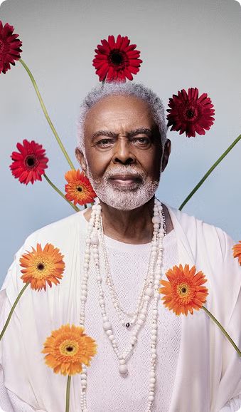
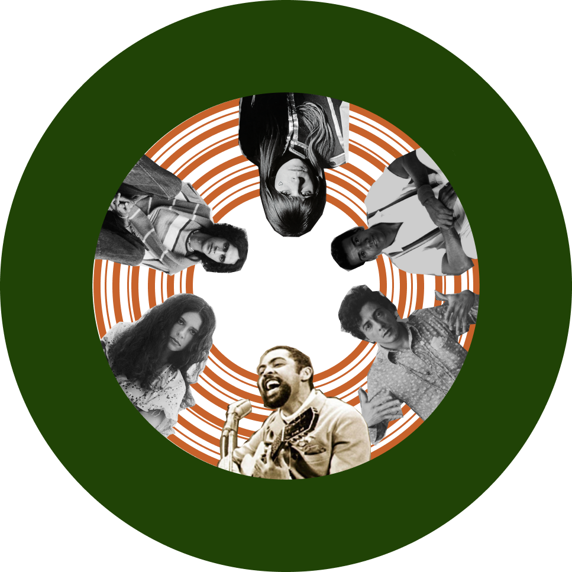

Gilberto Gil

Gal Costa

Caetano Veloso

A Tropicália surgiu durante a ditadura militar no Brasil (1964-1985), um período de forte repressão política e censura. O movimento foi, em grande parte, uma reação ao contexto opressor da época, utilizando a música, a arte e o comportamento como formas de resistência e contestação. Embora alguns dos principais nomes da Tropicália, como Caetano Veloso e Gilberto Gil, tenham sido inicialmente perseguidos e até exilados devido às suas músicas e posicionamentos políticos, o movimento também trouxe uma proposta de ruptura com as convenções tradicionais da sociedade brasileira. A mistura de influências nacionais e estrangeiras e a linguagem provocativa da Tropicália desafiaram a censura e as normas estabelecidas, fazendo da arte um espaço de resistência contra a repressão da ditadura. Quer saber mais? Arraste para baixo para conhecer um pouco mais sobre os artistas que marcaram esse período!
Nomes de destaque no cenário musical da época
Clique no disco abaixo para ouvir algumas músicas que marcaram a Tropicália!
